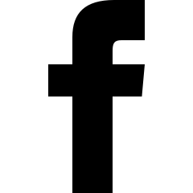

menu
search
SPACE & COSMOS
SUBSCRIBE NOW
LOG IN
Space Ripples Reveal Big Bang’s
Smoking Gun

mail
reply
Alan Guth was one of the first physicists to hypothesize the existence of inflation, which explains how the universe expanded so
uniformly and so quickly in the instant after the Big Bang 13.8 billion years ago.
Rick Friedman for The New York Times
By
Dennis Overbye
March 17, 2014